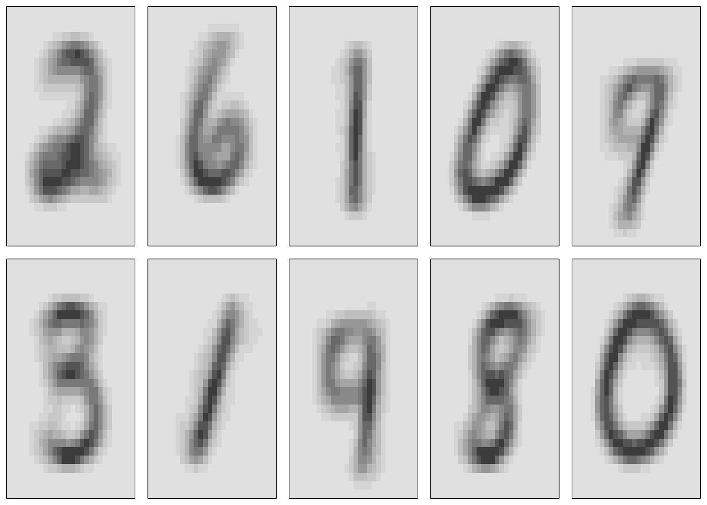
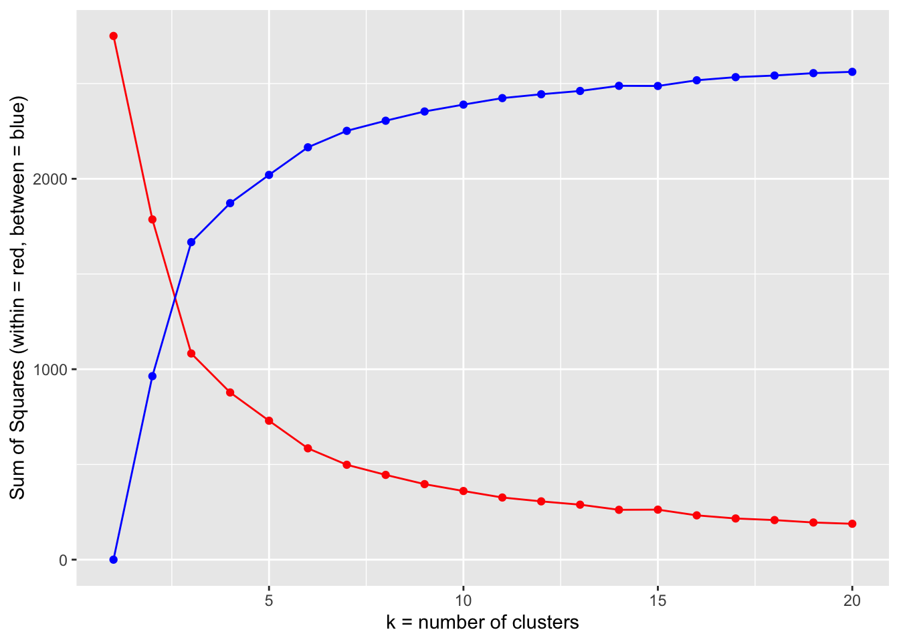
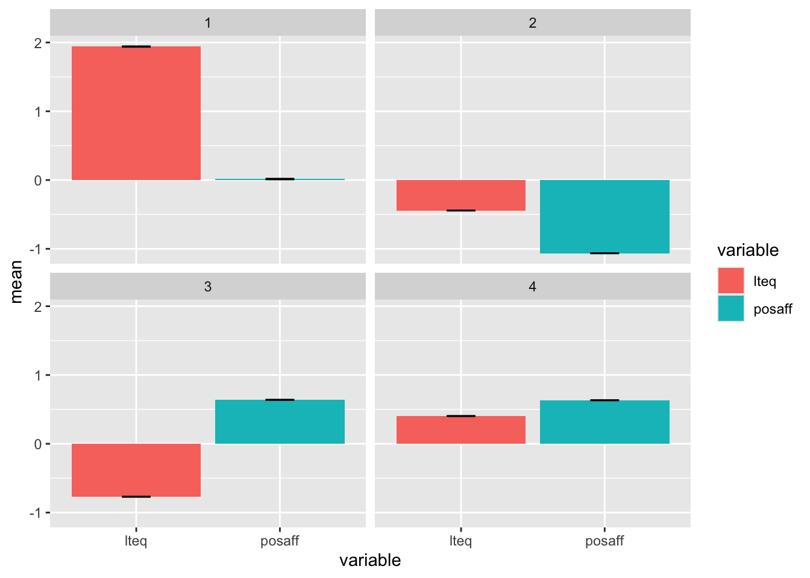

library(dslabs)
mnist <- dslabs::read_mnist()
url <- "https://koalaverse.github.io/homlr/data/my_basket.csv"
my_basket <- readr::read_csv(url)
features <- mnist$train$images
str(features) int [1:60000, 1:784] 0 0 0 0 0 0 0 0 0 0 ...This section of the book cover K-Means Clustering and DBSCAN clustering methods.
The origins of K-Means clustering trace back to the mid-20th century, with multiple independent discoveries across disciplines. The basic idea—partitioning data into k groups to minimize within-group variance—was first mentioned by Hugo Steinhaus (1956), who described a method for dividing points into clusters based on proximity.
The algorithm most people associate with K-Means was first introduced by Stuart Lloyd in a 1957 Bell Labs internal technical report titled “Least Squares Quantization in PCM”. Although unpublished for decades, his work was rediscovered and officially published in 1982.
Lloyd’s version of K-Means introduced the iterative refinement procedure:
This became the foundation for modern K-Means implementations.
Around the same time, James MacQueen (1967) independently proposed a similar algorithm in his paper “Some Methods for Classification and Analysis of Multivariate Observations.” MacQueen formalized the term “K-Means” and emphasized its use in statistical pattern recognition and data analysis.
Today, K-Means is one of the most widely used unsupervised learning algorithms in data science, statistics, and psychology. Its simplicity, speed, and interpretability have made it a standard for:
While its assumptions (spherical clusters, equal variance) limit its use in some contexts, K-Means remains foundational in both machine learning and psychological data analysis.
DBSCAN (Density-Based Spatial Clustering of Applications with Noise) groups together points that are closely packed based on density, while marking isolated points as outliers. Unlike K-Means, it does not require specifying the number of clusters in advance and can find clusters of arbitrary shape.
DBSCAN was introduced in 1996 by Ester, Kriegel, Sander, Xu in their paper “A Density-Based Algorithm for Discovering Clusters in Large Spatial Databases with Noise.”
DBSCAN emerged from the field of spatial data mining, where traditional clustering algorithms like K-Means struggled with:
The authors’ goal was to define clusters as areas of high point density, rather than assuming spherical shapes or specifying the number of clusters in advance.
DBSCAN introduced two important parameters:
The algorithm identifies core points (dense regions), border points, and noise points, expanding clusters outward from dense cores. This approach made DBSCAN robust to noise and capable of detecting clusters with irregular boundaries.
Today, DBSCAN is widely used in: - Geospatial analysis - Anomaly detection - Pattern recognition - Psychological and behavioral clustering (where outliers and irregular group shapes are common)
Clustering requires a way to measure how similar or different observations are, typically by computing a distance or dissimilarity matrix.
As we discussed previously, the chosen distance measure is crucial because it determines how similarity is quantified and influences the resulting cluster shapes and sizes.
Common distance measures include Euclidean and Manhattan distances, but alternatives like correlation-based, Gower, or cosine distances are often used depending on the data type and context.
The central goal of K-means clustering is to form clusters that minimize the total within-cluster variation. Clusters are groups of observations, for example, people.
Several algorithms exist for this purpose, with the standard being the Hartigan-Wong algorithm (Hartigan and Wong, 1979).
A good clustering solution is one for which the within-cluster variation is as small as possible
This method defines the total within-cluster variation as the sum of the squared Euclidean distances between each observation and its corresponding cluster centroid:
\[ W(C_k) = \sum_{x_i \in C_k} (x_i - \mu_k)^2 \]
where:
Each observation (\(x_i\)) is assigned to a given cluster such that the sum of squared (SS) distances of each observation to their assigned cluster centers (\(\mu_k\)) is minimized.
To make this concrete, let’s define within cluster variation using the squared Euclidian distance (the most commonly used metric)
\[ W(C_{k}) = \frac{1}{|C_k|}\sum_{i,i'\in C_k}\sum_{j=1}^{p}(x_{ij}-x_{i'j})^2 \]
Furthermore, the total within-cluster variation, or sum of squares within clusters, is defined as:
\[ SS_{\text{within}} = \sum_{k=1}^{K} W(C_k) = \sum_{k=1}^{K} \sum_{x_i \in C_k} (x_i - \mu_k)^2 \]
This measure, \(SS_{\text{within}}\), quantifies the compactness or “goodness” of the resulting clusters. A smaller value of \(SS_{\text{within}}\) indicates tighter, more cohesive clusters.

The K-means algorithm will assign each observation to exactly one of the \(K\) clusters.


 Here, we establish a new centroid (X) based on the means of the current assignment Then do the assignment again by cacluting the closeness to the new centroid,
Here, we establish a new centroid (X) based on the means of the current assignment Then do the assignment again by cacluting the closeness to the new centroid,


The K-means algorithm is sensitive to the initial random assignment of cluster centroids.
 Randomness of the initial choice for the starting point. We might end up with different solutions when we have different starting points.
Randomness of the initial choice for the starting point. We might end up with different solutions when we have different starting points.
Now, let’s take a look with various random starting points.

We ended up with three clusters, but the random start value influenced, above the variance is printed, there are 4 identical solutions \(235.8\) but different order (label switching).
The K-Means algorithm finds a local rather than a global optimum. This means results obtained will depend on the initial (random) cluster assignment of each observation
It is important to run the algorithm multiple times from different random starting values and then select the best solution. Here, by best, we mean the minimum within cluster variance.

You want to maximize data reduction while making sure that you have good accuracy in terms of cluster memberships.
Some possibilities for choosing \(K\):

Silhouette Coefficient
 The silhouette coefficient is one such measure. It works as follows:
The silhouette coefficient is one such measure. It works as follows:
For each point \(p\), first find the average distance between p and all other points in the same cluster (this is a measure of cohesion, call it \(a\)).
Then find the average distance between \(p\) and all points in the nearest cluster (this is a measure of separation from the closest other cluster, call it \(b\)).
The silhouette coefficient for \(p\) is defined as the difference between \(b\) and \(a\) divided by the greater of the two (\(max(a,b)\)).
We evaluate the cluster coefficient of each point and from this we can obtain the ‘overall’ average cluster coefficient.
Intuitively, we are trying to measure the space between clusters. If cluster cohesion is good (\(a\) is small) and cluster separation is good (\(b\) is large), the numerator will be large, etc.
The silhouette plot shows the that the silhouette coefficient was highest when \(k = 3\), suggesting that’s the optimal number of clusters. In this example we are lucky to be able to visualize the data and we might agree that indeed, three clusters best captures the segmentation of this data set.
If we were unable to visualize the data, perhaps because of higher dimensionality, a silhouette plot would still give us a suggestion.
Another method to consider is Density-based spatial clustering of applications with noise (DBSCAN).
DBSCAN is a powerful, widely used method – great with identifying clusters of arbitrary shape clusters together points that are closely packed together (high density regions), and identifies outliers (not part of any clusters) as points whose neighbors are far away (low-density regions).


Eps: You have to choose this value. Recommended to be smallish and based on domain knowledge. Eps defines the size and borders of each neighborhood. The Eps (must be bigger than 0) is a radius. The neighborhood of point \(p\) called the Eps-neighborhood of \(p\), is the ball with radius Eps around point \(p\).

MinPts: You have to choose this value. Recommended to be twice the number of dimensions in your dataset.
MinPts is the density threshold. If a neighborhood includes at least MinPts points, it will be considered as a dense region. Alternatively, a point will be considered as dense if there are at least the value of MinPts points in its Eps-neighborhood. These dense points are called core points.
Point \(p\) is a core point because the size of its Eps-neighborhood is 12 and MinPts is 5. Point \(q\), on the other hand, won’t be a core point because its Eps-neighborhood is 4, smaller than MinPts.
A border point has Eps-neighborhood that contains less than MinPts points (so it’s not a core point), but it belongs to the Eps-neighborhood of another core point.
If a point isn’t a core point and isn’t a border point, it’s a noise point or an outlier.
In the figure below we can see that point \(x\) is a core point, because it has more than \(11\) points in its Eps-neighborhood. Point \(y\) isn’t a core point because it has less than \(11\) points in its Eps-neighborhood, but because it belongs to the Eps-neighborhood of point \(x\), and point \(x\) is a core point, point \(y\) is a border point. We can easily see that point \(z\) isn’t a core point. It belongs to the Eps-neighborhood of point \(y\), but point \(y\) isn’t a core point, therefore point \(z\) is a noise point.
 Note, the assumption here is that we sampled well, like there are really not a lot of people around the outlier.
Note, the assumption here is that we sampled well, like there are really not a lot of people around the outlier.
A wonderful illustrated description of the DBSCAN algorithm can be found at: https://towardsdatascience.com/a-practical-guide-to-dbscan-method-d4ec5ab2bc99
Perform clustering with different choices of parameters, and look at the full set of results in order to see what patterns consistently emerge
Since clustering can be non-robust, recommend to cluster subsets of the data and evaluate robustness of the clusters obtained
Most importantly, must be careful about how the results of a clustering analysis are reported.
Results should not be taken as the absolute truth about a data set.
Instead, results often constitute a starting point for the development of a scientific hypothesis and further study, preferably on an independent data set
Let’s illustrate an example by performing k-means clustering on the MNIST pixel features and see if we can identify unique clusters of digits without using the response variable.
Here, we declare k=10 only because we already know there are 10 unique digits represented in the data. We also use 10 random starts (nstart = 10).
The output of our model contains many of the metrics we’ve already discussed such as total within-cluster variation (withinss), total within-cluster sum of squares (tot.withinss), the size of each cluster (size), and the iteration out of our 10 random starts used (iter). It also includes the cluster each observation is assigned to and the centers of each cluster.
library(dslabs)
mnist <- dslabs::read_mnist()
url <- "https://koalaverse.github.io/homlr/data/my_basket.csv"
my_basket <- readr::read_csv(url)
features <- mnist$train$images
str(features) int [1:60000, 1:784] 0 0 0 0 0 0 0 0 0 0 ...Now we can cluster the features using K-means and the kmeans() function in R.
# Use k-means model with 10 centers and 10 random starts
mnist_clustering <- kmeans(features, centers = 10, nstart = 10)
# Print contents of the model output
str(mnist_clustering)List of 9
$ cluster : int [1:60000] 8 7 6 4 9 1 5 8 5 9 ...
$ centers : num [1:10, 1:784] 0 0 0 0 0 0 0 0 0 0 ...
..- attr(*, "dimnames")=List of 2
.. ..$ : chr [1:10] "1" "2" "3" "4" ...
.. ..$ : NULL
$ totss : num 2.06e+11
$ withinss : num [1:10] 1.51e+10 2.19e+10 1.58e+10 1.04e+10 9.08e+09 ...
$ tot.withinss: num 1.53e+11
$ betweenss : num 5.27e+10
$ size : int [1:10] 4681 7447 5717 5620 5967 8918 3176 6544 8837 3093
$ iter : int 8
$ ifault : int 0
- attr(*, "class")= chr "kmeans"The centers output is a 10x784 matrix. This matrix contains the average value of each of the 784 features for the 10 clusters.
We can plot this as in Figure 20.5 which shows us what the typical digit is in each cluster. We clearly see recognizable digits even though k-means had no insight into the response variable.
# Extract cluster centers
mnist_centers <- mnist_clustering$centers
# Plot typical cluster digits
par(mfrow = c(2, 5), mar=c(0.5, 0.5, 0.5, 0.5))
layout(matrix(seq_len(nrow(mnist_centers)), 2, 5, byrow = FALSE))
for(i in seq_len(nrow(mnist_centers))) {
image(matrix(mnist_centers[i, ], 28, 28)[, 28:1],
col = gray.colors(12, rev = TRUE), xaxt="n", yaxt="n")
}
Since we also know the truth here we can take a look at the accuracy of our clustering by comparing the cluster assignments to the actual digit labels.
# Create mode function
mode_fun <- function(x){
which.max(tabulate(x))
}
mnist_comparison <- data.frame(
cluster = mnist_clustering$cluster,
actual = mnist$train$labels
) %>%
group_by(cluster) %>%
mutate(mode = mode_fun(actual)) %>%
ungroup() %>%
mutate_all(factor, levels = 0:9)
# Create confusion matrix and plot results
yardstick::conf_mat(
mnist_comparison,
truth = actual,
estimate = mode
) %>%
autoplot(type = 'heatmap')
When clustering the MNIST data, the number of clusters we specified was based on prior knowledge of the data. However, often we do not have this kind of a priori information and the reason we are performing cluster analysis is to identify what clusters may exist. So how do we go about determining the right number of k? Let’s examine this in more detail.
Again, let’s use the experience sampling data sets, but treats these data as though they are cross-sectional. Getting the data and doing a bit of data management (new id variable)
#set filepath for data file
filepath <- "https://quantdev.ssri.psu.edu/sites/qdev/files/AMIBbrief_raw_daily1.csv"
#read in the .csv file using the url() function
daily <- read.csv(file=url(filepath),header=TRUE)
#clean-up of variable names so that they are all lowercase
var.names.daily <- tolower(colnames(daily))
colnames(daily)<-var.names.daily
#creating a new "id" variable
#(we had repeated measures nested in people, now they all get different ids)
daily$id <- daily$id*10+daily$day
names(daily) [1] "id" "day" "date" "slphrs" "weath" "lteq" "pss"
[8] "se" "swls" "evalday" "posaff" "negaff" "temp" "hum"
[15] "wind" "bar" "prec" #reducing down to variable set
daily <- daily[ ,c("id","slphrs","weath","lteq","pss","se","swls","evalday", "posaff","negaff","temp","hum","wind","bar","prec")]
#removing observations with NA
dailysub <- daily[complete.cases(daily), ]
describe(dailysub) vars n mean sd median trimmed mad min max
id 1 1376 3276.28 1279.88 3271.50 3302.24 1497.43 1010.00 5327.00
slphrs 2 1376 7.20 1.81 7.00 7.20 1.48 0.00 18.00
weath 3 1376 2.00 1.29 2.00 2.00 1.48 0.00 4.00
lteq 4 1376 12.50 10.42 9.00 11.24 8.90 0.00 58.00
pss 5 1376 2.62 0.68 2.75 2.64 0.74 0.00 4.00
se 6 1376 3.43 0.99 3.00 3.46 1.48 1.00 5.00
swls 7 1376 4.11 1.27 4.20 4.15 1.19 1.00 7.00
evalday 8 1376 0.68 0.46 1.00 0.73 0.00 0.00 1.00
posaff 9 1376 4.11 1.10 4.20 4.14 1.19 1.00 7.00
negaff 10 1376 2.45 1.04 2.20 2.34 1.04 1.00 6.90
temp 11 1376 40.18 7.88 42.00 40.51 8.90 20.80 56.00
hum 12 1376 0.62 0.20 0.66 0.63 0.21 0.24 0.90
wind 13 1376 7.36 4.45 7.00 6.81 4.45 0.70 20.00
bar 14 1376 30.02 0.33 30.00 30.04 0.43 29.32 30.54
prec 15 1376 0.05 0.09 0.00 0.03 0.00 0.00 0.30
range skew kurtosis se
id 4317.00 -0.10 -1.04 34.50
slphrs 18.00 0.12 1.93 0.05
weath 4.00 -0.06 -1.06 0.03
lteq 58.00 1.07 0.95 0.28
pss 4.00 -0.37 0.17 0.02
se 4.00 -0.40 -0.12 0.03
swls 6.00 -0.28 -0.22 0.03
evalday 1.00 -0.79 -1.37 0.01
posaff 6.00 -0.24 -0.37 0.03
negaff 5.90 0.95 0.67 0.03
temp 35.20 -0.37 -0.24 0.21
hum 0.66 -0.36 -1.10 0.01
wind 19.30 0.97 0.86 0.12
bar 1.22 -0.39 -0.90 0.01
prec 0.30 1.85 1.98 0.00#scaling all the variables
dailyscale <- data.frame(scale(dailysub, center=TRUE, scale=TRUE))
#checking and fixing the id variable (which we did not want standardized)
str(dailyscale$id) num [1:1376] -1.77 -1.77 -1.77 -1.77 -1.77 ...dailyscale$id <- dailysub$id
str(dailyscale$id) num [1:1376] 1010 1011 1012 1013 1014 ...describe(dailyscale) vars n mean sd median trimmed mad min max
id 1 1376 3276.28 1279.88 3271.50 3302.24 1497.43 1010.00 5327.00
slphrs 2 1376 0.00 1.00 -0.11 0.00 0.82 -3.98 5.98
weath 3 1376 0.00 1.00 0.00 0.00 1.15 -1.55 1.54
lteq 4 1376 0.00 1.00 -0.34 -0.12 0.85 -1.20 4.37
pss 5 1376 0.00 1.00 0.19 0.03 1.08 -3.83 2.02
se 6 1376 0.00 1.00 -0.43 0.04 1.49 -2.45 1.58
swls 7 1376 0.00 1.00 0.07 0.03 0.93 -2.45 2.27
evalday 8 1376 0.00 1.00 0.68 0.10 0.00 -1.47 0.68
posaff 9 1376 0.00 1.00 0.08 0.03 1.08 -2.82 2.63
negaff 10 1376 0.00 1.00 -0.24 -0.11 1.00 -1.40 4.28
temp 11 1376 0.00 1.00 0.23 0.04 1.13 -2.46 2.01
hum 12 1376 0.00 1.00 0.20 0.05 1.06 -1.94 1.42
wind 13 1376 0.00 1.00 -0.08 -0.12 1.00 -1.50 2.84
bar 14 1376 0.00 1.00 -0.05 0.06 1.29 -2.09 1.56
prec 15 1376 0.00 1.00 -0.53 -0.26 0.00 -0.53 2.68
range skew kurtosis se
id 4317.00 -0.10 -1.04 34.50
slphrs 9.97 0.12 1.93 0.03
weath 3.09 -0.06 -1.06 0.03
lteq 5.57 1.07 0.95 0.03
pss 5.85 -0.37 0.17 0.03
se 4.03 -0.40 -0.12 0.03
swls 4.72 -0.28 -0.22 0.03
evalday 2.15 -0.79 -1.37 0.03
posaff 5.45 -0.24 -0.37 0.03
negaff 5.68 0.95 0.67 0.03
temp 4.47 -0.37 -0.24 0.03
hum 3.36 -0.36 -1.10 0.03
wind 4.33 0.97 0.86 0.03
bar 3.65 -0.39 -0.90 0.03
prec 3.21 1.85 1.98 0.03Basic clustering in the social sciences often makes use of the K-means procedure.
The k-means algorithm is a traditional and widely used clustering algorithm.
In brief, the algorithm begins by specifying the number of clusters we are interested in. This is the k. Each of the k clusters is identified by the vector of the average (i.e., the mean) value of each of the variables for observations within a cluster. A random clustering is constructed (random set of mean vectors).
The k means are calculated. Then, using the distance measure, we gravitate each observation to its nearest mean. The means are then recalculated and the points re-gravitate. And so on until there is no further change to the means.
Let’s see an example where we chose \(K=4\).
We use the R function kmeans().
#there are random starts involved so we set a seed
set.seed(1234)
#running a cluster analysis
model <- kmeans(dailyscale[,c("lteq","posaff")], centers=4)
modelK-means clustering with 4 clusters of sizes 377, 578, 240, 181
Cluster means:
lteq posaff
1 -0.6558537 -1.0705106
2 -0.4408363 0.6996343
3 0.7763740 -0.5678819
4 1.7443674 0.7485388
Clustering vector:
1 2 3 4 5 6 7 9 10 11 13 14 15 17 18 19
2 1 2 2 3 3 4 2 4 2 2 2 1 2 2 2
20 21 22 23 27 28 29 30 31 32 37 38 39 40 41 42
1 1 1 4 1 1 1 1 2 2 2 2 2 2 1 2
43 44 47 48 49 51 52 53 54 55 56 57 58 59 60 61
2 1 2 2 2 2 2 2 2 1 3 3 1 1 1 3
62 63 64 66 67 68 70 71 72 73 74 75 76 77 78 79
3 2 4 3 1 3 2 2 2 2 2 2 2 1 2 3
81 84 85 86 87 88 89 90 91 92 93 95 96 97 98 99
2 1 3 1 2 2 2 4 4 4 4 2 2 2 2 4
101 102 103 105 106 107 108 110 111 112 113 114 115 116 117 118
4 3 2 3 4 4 3 2 4 4 4 4 4 2 4 4
119 120 121 122 123 124 125 126 127 128 129 130 131 132 133 134
4 3 1 1 1 1 1 1 1 2 2 2 2 2 2 2
135 136 137 138 140 141 143 144 145 146 147 149 150 151 152 153
2 4 4 2 3 3 3 4 3 4 4 4 4 4 1 3
154 155 156 157 158 159 160 161 162 163 164 165 166 167 168 169
2 3 2 3 3 2 2 2 2 2 2 2 2 2 2 2
170 171 172 173 174 175 176 177 178 179 180 181 182 183 184 185
1 2 3 1 1 1 1 1 1 1 1 2 2 2 3 3
186 187 188 189 190 191 192 193 194 196 197 198 199 201 202 203
2 4 4 4 3 3 4 1 1 2 2 2 2 2 4 4
204 205 206 208 209 210 211 212 213 214 215 216 217 218 219 220
2 2 4 4 4 2 2 2 2 2 2 1 2 3 3 1
221 222 223 224 225 226 228 229 230 231 232 233 234 235 236 237
1 3 3 3 3 2 2 2 1 1 2 3 3 2 3 1
238 239 240 241 242 243 244 245 246 247 248 249 250 251 252 253
2 2 1 1 3 3 2 3 3 2 3 2 3 3 3 3
254 255 256 257 258 259 260 261 262 263 264 265 266 267 268 269
3 4 3 3 2 2 2 2 1 2 2 2 2 1 2 1
270 271 272 273 274 275 276 277 278 279 280 281 282 283 285 286
3 3 2 2 2 2 1 1 1 2 1 1 1 3 3 1
287 288 289 290 291 292 293 294 295 296 297 298 299 300 301 302
1 2 2 1 1 1 1 1 1 2 2 2 3 1 2 1
303 304 305 306 307 308 309 312 313 314 315 316 317 318 319 320
3 2 2 2 2 2 1 2 2 2 2 3 3 1 1 2
321 323 324 325 326 327 328 329 330 331 332 333 334 335 343 344
2 2 2 2 2 2 2 4 2 2 2 2 2 2 3 2
345 346 347 348 349 350 352 353 354 355 356 358 359 360 361 364
1 2 1 2 2 2 2 2 2 1 1 1 1 2 4 4
365 366 367 368 369 370 371 372 373 374 376 377 378 379 380 381
4 4 2 2 2 2 3 2 2 3 1 1 1 2 2 1
382 383 384 385 386 387 388 389 390 391 392 393 394 395 396 397
1 2 3 2 3 2 2 3 3 3 3 4 1 1 4 3
398 399 400 401 402 403 404 405 406 407 408 409 410 411 412 413
4 4 4 1 1 4 4 3 4 1 1 1 2 1 1 1
414 415 416 417 418 419 422 423 424 425 426 427 428 429 430 431
1 2 2 2 2 2 1 2 3 3 4 3 3 4 4 2
432 433 434 435 436 437 438 439 441 442 443 444 445 446 447 448
2 2 2 2 3 1 1 3 2 2 3 3 3 3 2 2
449 450 451 452 453 454 455 456 457 458 459 460 461 462 463 464
2 2 2 2 2 2 1 1 1 1 3 3 1 3 2 2
465 466 467 468 469 470 471 472 473 474 475 476 477 478 479 480
1 1 2 2 2 1 2 2 3 3 2 1 1 1 1 1
481 483 485 486 487 488 489 490 491 492 493 494 495 496 497 498
2 1 2 2 2 1 1 1 1 1 1 2 1 2 1 1
499 500 501 502 503 504 505 506 507 508 509 510 511 512 513 514
1 1 2 2 3 3 3 3 3 2 2 2 2 2 2 2
515 516 517 518 519 520 521 522 523 524 525 526 527 528 529 530
1 1 4 3 2 2 4 2 4 4 1 1 1 2 3 3
531 533 534 535 536 537 538 539 540 541 542 543 544 545 546 548
3 3 4 4 4 1 1 1 1 1 1 1 4 4 2 4
549 550 551 552 553 554 555 556 557 558 559 560 561 562 563 564
4 2 2 2 4 3 3 4 1 3 4 2 3 1 1 2
565 566 567 568 569 570 571 572 573 574 575 576 577 578 579 580
3 1 1 2 2 2 2 2 2 2 2 1 3 4 4 4
581 582 583 584 585 586 587 588 589 590 591 592 593 594 595 596
3 1 1 1 2 2 1 1 2 1 1 2 1 1 1 2
597 598 599 601 602 603 604 605 606 607 609 610 611 612 613 614
1 1 1 2 1 1 2 1 1 1 2 2 2 2 1 1
615 616 617 618 619 620 621 622 623 624 625 626 628 629 630 631
2 2 2 3 2 2 3 1 1 2 2 2 2 2 2 2
632 633 634 635 636 637 638 639 640 641 642 643 644 645 646 647
1 1 1 3 1 2 1 1 2 3 2 3 1 1 1 1
648 649 650 651 652 653 654 655 656 657 658 659 660 661 662 663
1 2 3 1 1 1 3 4 3 1 1 1 1 1 1 3
664 665 666 667 668 669 670 671 672 673 674 675 676 677 678 679
3 4 4 4 4 4 4 3 4 4 4 2 2 1 4 2
680 681 682 684 685 686 687 688 689 690 691 692 693 694 696 697
2 2 2 1 3 2 2 4 4 2 2 2 4 4 2 1
698 699 700 701 702 703 704 705 706 707 708 709 710 711 712 713
1 2 1 1 1 3 3 3 3 3 3 1 3 1 1 1
714 715 716 717 719 720 721 722 723 724 725 726 727 728 731 735
2 1 1 1 1 1 3 1 1 1 1 3 4 4 4 2
736 737 738 739 740 741 742 743 744 745 746 747 748 749 750 751
4 2 4 4 3 3 3 4 3 3 2 4 3 3 2 2
752 753 754 755 757 758 759 760 761 762 763 764 765 766 767 768
3 3 2 2 1 2 2 1 1 2 2 1 2 2 2 2
769 770 771 772 773 774 775 776 777 778 779 780 781 782 783 784
2 1 2 2 3 1 3 3 3 1 1 1 3 1 1 1
785 786 787 788 789 790 791 792 793 794 795 796 797 798 799 800
1 1 1 1 2 2 1 1 4 4 4 1 3 2 4 4
801 802 803 804 805 806 807 808 809 810 811 812 813 814 815 816
4 4 4 1 3 1 2 2 2 2 2 2 2 1 1 1
817 819 820 821 822 823 824 825 826 827 828 829 830 831 832 833
2 1 1 1 1 2 2 2 1 2 1 4 1 1 2 2
834 835 836 837 838 839 840 841 842 843 844 845 846 847 848 849
1 4 1 2 2 2 1 2 2 2 3 3 3 1 3 2
850 851 852 853 854 855 856 857 858 859 860 861 862 863 864 866
2 1 2 1 3 2 2 4 4 2 4 2 4 4 3 4
867 868 869 871 872 873 874 875 876 877 878 879 880 881 882 883
3 4 4 3 4 3 4 1 1 4 1 1 2 1 2 1
884 885 886 887 888 889 890 891 892 893 894 895 896 897 898 899
1 2 2 1 1 1 2 1 2 2 3 3 2 2 1 2
900 901 902 903 904 905 906 907 908 909 910 911 912 913 914 915
2 2 2 2 2 1 3 1 2 2 3 3 3 1 3 3
916 917 918 919 920 921 922 923 924 925 926 927 928 929 930 931
3 3 2 3 2 3 2 1 2 1 2 2 1 2 2 2
932 933 934 935 936 937 938 940 942 943 944 945 946 947 948 949
1 2 4 4 4 4 4 2 2 2 2 2 1 3 2 2
950 951 952 953 956 957 958 959 960 961 962 963 964 965 966 967
3 3 2 1 1 1 2 2 2 3 3 3 3 2 3 3
968 969 970 971 972 973 974 976 977 978 979 980 982 983 984 985
2 1 1 3 4 3 1 2 2 3 3 3 2 2 2 2
986 987 988 989 990 991 992 993 994 995 996 997 998 999 1000 1001
1 3 3 1 3 3 2 2 4 3 3 3 1 2 3 1
1002 1003 1004 1005 1006 1007 1008 1009 1011 1012 1013 1014 1015 1016 1017 1018
3 4 3 4 1 2 2 2 1 1 2 3 3 3 4 4
1019 1020 1021 1022 1023 1024 1025 1026 1027 1028 1029 1030 1031 1032 1033 1034
2 2 2 1 3 3 3 4 4 1 2 1 3 1 1 1
1035 1036 1037 1038 1039 1040 1041 1042 1043 1044 1045 1046 1047 1048 1049 1050
1 1 1 2 2 2 2 2 2 2 2 4 2 2 2 2
1051 1052 1053 1054 1055 1056 1057 1058 1059 1060 1061 1062 1064 1065 1066 1067
4 2 4 2 2 2 2 1 1 1 1 3 3 1 3 2
1068 1069 1070 1071 1072 1073 1074 1075 1076 1077 1078 1079 1080 1081 1082 1083
2 3 2 4 2 3 3 3 4 2 2 2 2 1 2 1
1084 1085 1086 1087 1088 1089 1090 1091 1092 1093 1094 1095 1096 1097 1098 1099
3 2 2 2 2 2 2 2 2 2 2 2 2 2 2 2
1100 1101 1102 1103 1104 1105 1106 1107 1108 1109 1110 1111 1112 1113 1114 1115
2 2 1 2 1 1 2 1 2 2 4 2 4 2 2 2
1116 1117 1118 1119 1120 1121 1122 1123 1124 1125 1126 1127 1128 1129 1130 1131
2 2 2 3 3 3 1 3 2 2 2 2 2 2 4 4
1132 1133 1134 1135 1136 1137 1138 1139 1140 1141 1142 1143 1144 1145 1146 1147
4 2 2 4 2 4 4 3 4 4 2 2 2 3 2 2
1148 1149 1150 1151 1152 1153 1154 1156 1157 1158 1160 1161 1162 1163 1164 1165
2 2 2 2 1 2 2 1 2 1 2 2 2 1 1 1
1166 1167 1168 1169 1170 1171 1172 1173 1174 1175 1176 1177 1178 1179 1180 1181
2 4 4 1 3 1 4 2 4 3 3 2 3 3 4 4
1182 1183 1184 1185 1186 1187 1188 1189 1190 1191 1192 1193 1194 1195 1196 1197
1 2 2 1 2 2 3 1 3 3 4 2 2 4 2 4
1198 1199 1200 1201 1202 1203 1204 1205 1207 1208 1209 1210 1211 1212 1213 1215
2 2 2 2 2 2 1 1 2 1 2 2 2 2 2 2
1216 1217 1218 1219 1220 1221 1222 1223 1224 1225 1226 1227 1228 1229 1230 1231
2 1 2 2 2 2 1 2 1 2 2 1 2 1 4 4
1232 1233 1234 1235 1236 1237 1238 1239 1240 1241 1242 1243 1244 1245 1246 1247
4 3 4 4 3 3 2 2 1 2 2 2 1 1 2 2
1248 1249 1250 1251 1252 1253 1254 1255 1256 1257 1258 1259 1260 1261 1262 1263
2 3 1 2 4 2 4 4 2 4 4 4 3 4 2 2
1264 1265 1266 1267 1268 1269 1270 1271 1272 1273 1274 1275 1276 1277 1278 1279
2 2 3 2 1 3 2 3 4 4 1 2 2 4 2 2
1280 1281 1282 1283 1284 1285 1286 1287 1288 1289 1290 1291 1292 1293 1294 1295
2 2 1 1 1 1 2 1 1 1 2 2 2 2 2 2
1296 1297 1298 1299 1300 1301 1302 1304 1305 1306 1307 1308 1309 1310 1311 1312
3 1 3 2 2 2 2 1 1 1 1 2 2 2 2 2
1313 1314 1315 1316 1317 1318 1319 1320 1321 1322 1323 1324 1325 1326 1327 1328
2 2 2 2 1 2 2 2 2 1 2 2 2 1 2 1
1329 1330 1331 1332 1333 1334 1335 1336 1337 1338 1339 1340 1341 1342 1343 1344
1 1 1 4 1 3 2 3 3 3 3 2 2 2 2 2
1345 1346 1347 1348 1349 1350 1351 1352 1353 1354 1355 1356 1357 1358 1359 1360
1 2 2 2 2 2 2 2 2 2 2 2 2 2 2 2
1361 1362 1363 1364 1365 1366 1367 1368 1369 1370 1371 1372 1373 1374 1375 1376
2 2 2 2 2 2 2 2 1 2 2 4 4 3 1 4
1377 1378 1379 1380 1381 1382 1383 1384 1385 1386 1387 1388 1389 1390 1391 1392
3 3 3 4 1 2 2 4 4 4 4 1 1 1 1 1
1393 1394 1395 1396 1397 1398 1400 1401 1402 1403 1404 1405 1406 1407 1408 1409
1 1 1 3 3 3 2 3 3 4 1 1 2 2 1 2
1410 1411 1412 1413 1414 1415 1416 1417 1418 1419 1420 1421 1422 1423 1424 1425
3 2 1 2 2 1 1 1 1 2 1 2 1 1 1 1
1426 1427 1429 1430 1431 1432 1433 1434 1435 1436 1437 1438 1439 1440 1441 1442
1 2 4 4 4 3 1 3 4 3 1 1 1 1 1 1
1443 1444 1445 1446 1447 1448 1449 1450 1451 1452 1453 1454 1455 1456 1457 1458
2 1 1 1 1 1 1 1 3 1 2 2 1 3 2 2
Within cluster sum of squares by cluster:
[1] 201.2980 329.1644 175.7229 180.1350
(between_SS / total_SS = 67.8 %)
Available components:
[1] "cluster" "centers" "totss" "withinss" "tot.withinss"
[6] "betweenss" "size" "iter" "ifault" That is a lot of output! - but pretty easy to walk through and understand. The algorithm even gives a within cluster sum of squares, which is a measure of the explained variance.
Let’s extract the mean vectors and plot for a more intuitive understanding of the results.
#getting centers
model$centers lteq posaff
1 -0.6558537 -1.0705106
2 -0.4408363 0.6996343
3 0.7763740 -0.5678819
4 1.7443674 0.7485388#plotting clustered data points with k means
ggplot(dailyscale,aes(x=lteq,y=posaff)) +
geom_point(color=model$cluster, alpha=.6) +#plotting all the points
#plotting the centroids
geom_point(aes(x=model$centers[1,1],y=model$centers[1,2]),color=1,size=5,shape=18) +
geom_point(aes(x=model$centers[2,1],y=model$centers[2,2]),color=2,size=5,shape=18) +
geom_point(aes(x=model$centers[3,1],y=model$centers[3,2]),color=3,size=5,shape=18) +
geom_point(aes(x=model$centers[4,1],y=model$centers[4,2]),color=4,size=5,shape=18) 
Numerous measures are available for evaluating a clustering. Many are stored within the model object returned by kmeans().
A basic concept for evaluating the quality of the clusters is the sum of squares. This is typically a sum of the square of the distances between observations.
model$totss[1] 2750model$withinss[1] 201.2980 329.1644 175.7229 180.1350model$tot.withinss[1] 886.3203model$betweenss[1] 1863.68Evaluation of the sum of squares can help us both evaluate the quality of any given solution, as well as help us choose the number of clusters, k, needed to describe the data.
Evaluation: Within Sum of Squares
The within sum of squares is a measure of how close the observations are within the clusters. For a single cluster this is calculated as the average squared distance of each observation within the cluster from the cluster mean. Then the total within sum of squares is the sum of the within sum of squares over all clusters.
The total within sum of squares generally decreases as the number of clusters increases. As we increase the number of clusters they individually tend to become smaller and the observations closer together within the clusters. As k increases, the changes in the total within sum of squares would be expected to reduce, and so it flattens out. A good value of k might be where the reduction in the total weighted sum of squares begins to flatten.
General rule of thumb: Aim to minimize the total within sum of squares (achieve within-group similarity).
Evaluation: Between Sum of Squares
The between sum or squares is a measure of how far the clusters are from each other.
General rule of thumb: Aim to maximize the between sum of squares (achieve between-group dissimilarity).
A good clustering will have a small within sum of squares and a large between sum of squares.
So, we need to have a range of solutions to see how the within and between sum of squares looks with different k.
#making a empty dataframe
criteria <- data.frame()
#setting range of k
nk <- 1:20
#loop for range of clusters
for (k in nk) {
model <- kmeans(dailyscale[,c("lteq","posaff")], k)
criteria <- rbind(criteria,c(k,model$tot.withinss,model$betweenss,model$totss))
}
#renaming columns
names(criteria) <- c("k","tot.withinss","betweenss","totalss")
#scree plot
ggplot(criteria, aes(x=k)) +
geom_point(aes(y=tot.withinss),color="red") +
geom_line(aes(y=tot.withinss),color="red") +
geom_point(aes(y=betweenss),color="blue") +
geom_line(aes(y=betweenss),color="blue") +
xlab("k = number of clusters") + ylab("Sum of Squares (within = red, between = blue)")
#looking at criteria
round(criteria,2) k tot.withinss betweenss totalss
1 1 2750.00 0.00 2750
2 2 1786.49 963.51 2750
3 3 1082.70 1667.30 2750
4 4 877.93 1872.07 2750
5 5 729.55 2020.45 2750
6 6 584.64 2165.36 2750
7 7 498.26 2251.74 2750
8 8 445.17 2304.83 2750
9 9 396.60 2353.40 2750
10 10 360.53 2389.47 2750
11 11 326.35 2423.65 2750
12 12 306.13 2443.87 2750
13 13 288.76 2461.24 2750
14 14 261.78 2488.22 2750
15 15 262.64 2487.36 2750
16 16 232.66 2517.34 2750
17 17 216.25 2533.75 2750
18 18 207.83 2542.17 2750
19 19 195.18 2554.82 2750
20 20 188.38 2561.62 2750From the scree plot, we might look for 6 clusters (but it is really hard to see any “elbow”).
There are also additional quantitative criteria that can be used to inform selection.
For example, the Calinski-Harabasz criterion, also known as the variance ratio criterion, is the ratio of the between sum of squares (divided by k - 1) to the within sum of squares (divided by n - k).
The relative values can be used to compare clusterings of a single dataset, with higher values being better clusterings. The criterion is said to work best for spherical clusters with compact centers (as with normally distributed data) using k-means with Euclidean distance.
And of course this is a well-trodden area of research so there are many criteria - and packages that calculate them for you - and make automated choices.
Don’t just pick an index that shows your solution but check out the next point that talks about the stability of the solution. There is not “standard reporting” of cluster analysis results in the psychological literature. Different authors report different things - but all are using some metrics to justify the choice of k, and to support why the chosen cluster solution is a good description of the data.
Recall that k-means begins the iterations with a random cluster assignment. Different starting points may lead to different solutions. So, it may be useful to start many times to locate a stable solution. This is automated within the kmeans() function.
#kmeans with nstart = 1
km.res <- kmeans(dailyscale[,c("lteq","posaff")], centers=4, nstart = 1)
km.res$tot.withinss[1] 892.5106#kmeans with nstart = 25
km.res <- kmeans(dailyscale[,c("lteq","posaff")], centers=4, nstart = 25)
km.res$tot.withinss[1] 877.9312#kmeans with nstart = 50
km.res <- kmeans(dailyscale[,c("lteq","posaff")], centers=4, nstart = 50)
km.res$tot.withinss[1] 877.9312The improvement can be seen over the single random start.
Recommended to do 25+ or 50 for stable solutions.
Replication
It may also be informative to repeat the procedure on randomly selected portions of the sample. If the cluster solution replicates in (random) subsets of the data - that would be strong evidence that the typology is pervasive and meaningful.
After finding a suitable cluster solution, each individual is placed in a cluster. Formally, we obtain a vector of cluster assignments - a new categorical, grouping variable.
What’s next?
Well, we can both describe the clusters and use this new cluster variable in some other analysis - ANOVAs to test group differences, Chi-square tests, Multinomial regressions … the cluster variable can be used as a predictor, a correlate, an outcome (e.g., check whether those clusters are for example differ across personality variables etc.)
First we merge the vector of cluster assignments back into the data set.
dailyscale.clus <- cbind(km.res$cluster,dailyscale)
names(dailyscale.clus)[1] <- "cluster"
head(dailyscale.clus[,c(1:4,6)],4) cluster id slphrs weath pss
1 2 1010 -0.6623479 -0.7732500468 -0.1732048
2 2 1011 -2.8774184 -0.0005615469 0.1923317
3 3 1012 0.9989549 0.7721269531 1.2889411
4 3 1013 0.1683035 -0.0005615469 0.5578682We can describe the different clusters - and potentially name the clusters.
library(tidyverse)
# Gather the data to 'long' format so the clustering variables are all in one column
#gather() has been replaced by pivot_longer()
longdata <- dailyscale.clus %>%
pivot_longer(c(lteq, posaff), names_to = "variable", values_to = "value")
# Create the summary statistics seperately for cluster and variable (i.e. lteq, posaff)
summary <- longdata %>%
group_by(cluster, variable) %>%
summarise(mean = mean(value), se = sd(value) / length(value))
# Plot
ggplot(summary, aes(x = variable, y = mean, fill = variable)) +
geom_bar(stat = 'identity', position = 'dodge') +
geom_errorbar(aes(ymin = mean - se, ymax = mean + se),
width = 0.2,
position = position_dodge(0.9)) +
facet_wrap(~cluster) 
From this plot we can see the multivariate “profile” of each cluster - and use that to name the clusters. There can be some label switching, depending on random starting values, in terms of the cluster membership identifiers.
There are 4 profiles:
Vigorous Exercisers
Happy Sedentary
Happy Exercisers
Unhappy Sedentary
Now that we have clusters = groups, we can analyze them. For example, we can take our 4-cluster solution and see if the clusters differ on another variable.
Let’s see how the cluster groups differ on perceived stress (pss).
fit1 <- aov(pss ~ factor(km.res$cluster), data=dailyscale.clus)
summary(fit1) Df Sum Sq Mean Sq F value Pr(>F)
factor(km.res$cluster) 3 247 82.35 100.2 <2e-16 ***
Residuals 1372 1128 0.82
---
Signif. codes: 0 '***' 0.001 '**' 0.01 '*' 0.05 '.' 0.1 ' ' 1TukeyHSD(fit1) Tukey multiple comparisons of means
95% family-wise confidence level
Fit: aov(formula = pss ~ factor(km.res$cluster), data = dailyscale.clus)
$`factor(km.res$cluster)`
diff lwr upr p adj
2-1 -0.443865711 -0.6488720 -0.2388594 0.0000002
3-1 0.486036094 0.2765007 0.6955715 0.0000000
4-1 0.493702753 0.2813826 0.7060229 0.0000000
3-2 0.929901806 0.7681609 1.0916427 0.0000000
4-2 0.937568465 0.7722358 1.1029011 0.0000000
4-3 0.007666659 -0.1632497 0.1785830 0.9994508We see that clusters differ from each other on pss, except clusters 3 and 4 (or 3 and 2 if there was label switching).
Differences on non-clustering variables provide evidence that, indeed, the cluster solution is providing a meaningful distinction. The typology has value.
In sum, there are variety of ways to justify a cluster solution (e.g., selection of k)
A practical benefit of subgroup-oriented interpretation emerges when considering potential interventions. Multivariate profiles may point toward tailoring diagnostic and intervention efforts to individual needs.